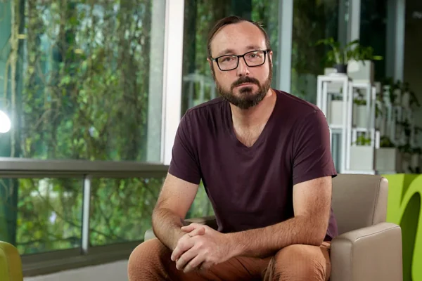
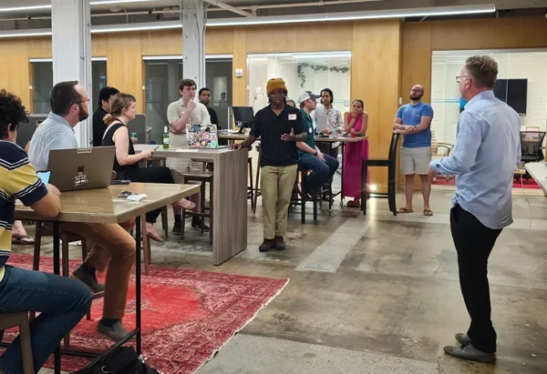
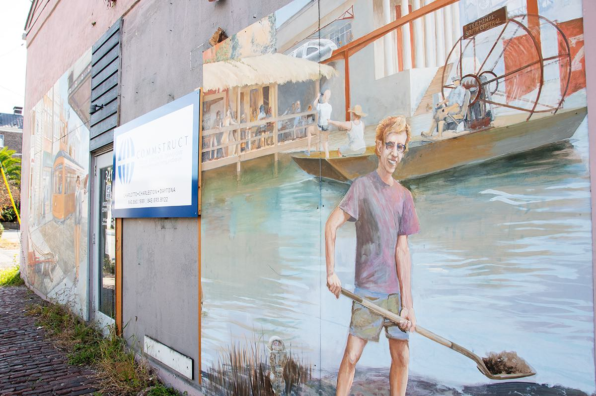
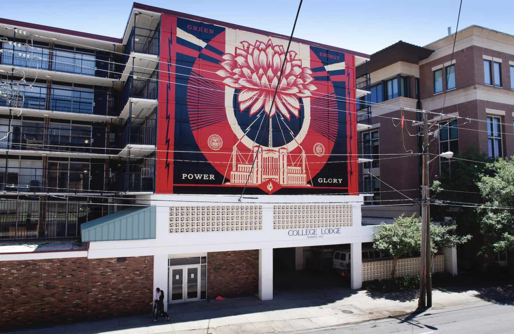
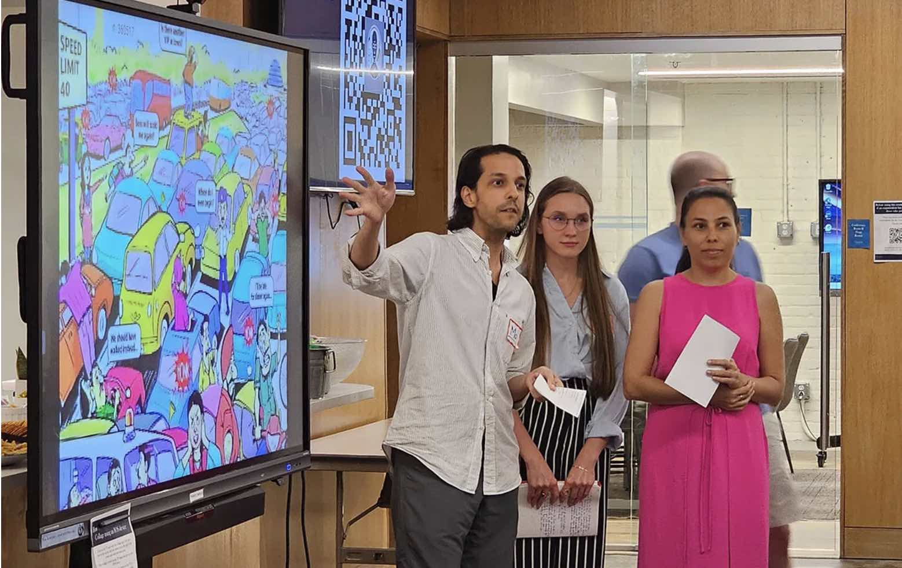
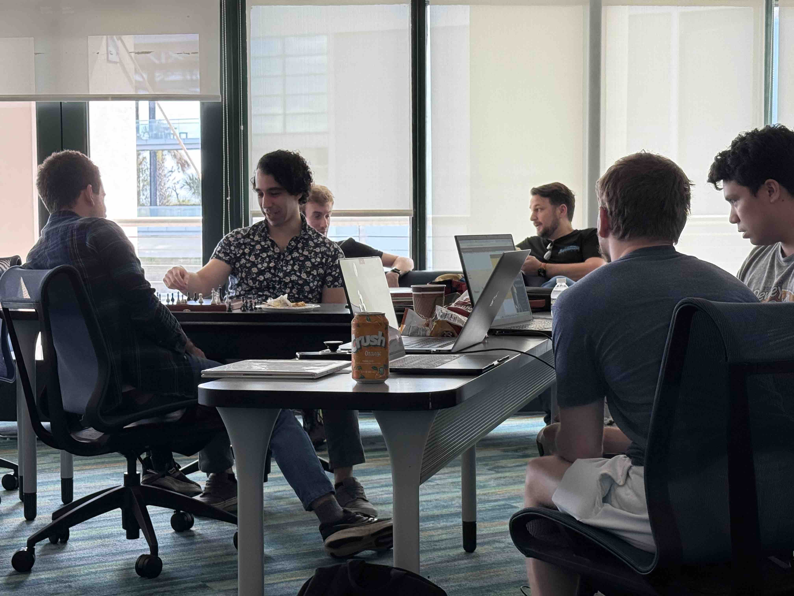

Compare and contrast: City Paper squares up against AI generator
Charleston City Paper ·

Tech guru says AI is creeping up, but not yet terrifying
Charleston City Paper ·

Deteriorating mural to be restored, possibly find new home
Charleston City Paper ·

Pair digitally preserves remaining Shepard Fairey murals
Charleston City Paper ·

Locals looking to AI to solve present, future problems
Charleston City Paper ·

Weekend hackathon to push power of vibe coding to edge
Charleston City Paper ·